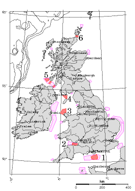

tricky to build on.
Admitting all these uncertainties, I arrive at an estimated total power
of 9 kWh/d per person from tidal stream-farms. This corresponds to 9% of
the raw incoming power mentioned on p83, 100 kWh per day per person.
(The extraction of 1.1 kWh/d/p in the Bristol channel, region 2, might
conflict with power generation by the Severn barrage; it would depend
on whether the tide farm significantly adds to the existing natural friction
created by the channel, or replaces it.)
| Region | U | power | area | average | raw power | |||||
|---|---|---|---|---|---|---|---|---|---|---|
| (knots) | density | power | d | ω | N | S | ||||
| N | S | (W/m2) | (km2) | (kWh/d/p) | (m) | (km) | (kWh/d/p) | |||
| 1 | 1.7 | 3.1 | 7 | 400 | 1.1 | 30 | 30 | 2.3 | 7.8 | |
| 2 | 1.8 | 3.2 | 8 | 350 | 1.1 | 30 | 17 | 1.5 | 4.7 | |
| 3 | 1.3 | 2.3 | 2.9 | 1000 | 1.2 | 50 | 30 | 3.0 | 9.3 | |
| 4 | 1.7 | 3.4 | 9 | 400 | 1.4 | 30 | 20 | 1.5 | 6.3 | |
| 5 | 1.7 | 3.1 | 7 | 300 | 0.8 | 40 | 10 | 1.2 | 4.0 | |
| 6 | 5.0 | 9.0 | 170 | 50 | 3.5 | 70 | 10 | 24 | 78 | |
| Total | 9 | |||||||||
(a)(b)

| ||||||||||||||||||||||||||||||||||||||||||||||||||||||||||
| Buy the book on paper | ||||||||||||||||||||||||||||||||||||||||||||||||||||||||||
| Download pdf for free | ||||||||||||||||||||||||||||||||||||||||||||||||||||||||||
| ||||||||||||||||||||||||||||||||||||||||||||||||||||||||||
| Many thanks to William Sigmund and openDemocracy for the HTML conversion! | ||||||||||||||||||||||||||||||||||||||||||||||||||||||||||
| wiki | blog | more | ||||||||||||||||||||||||||||||||||||||||||||||||||||||||||